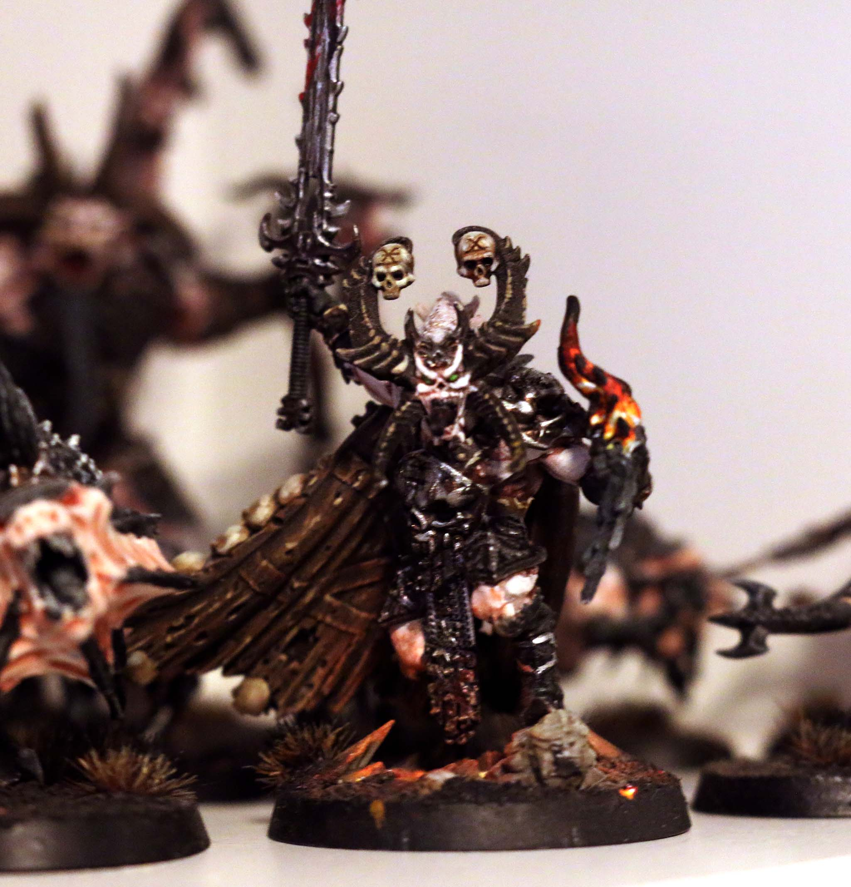
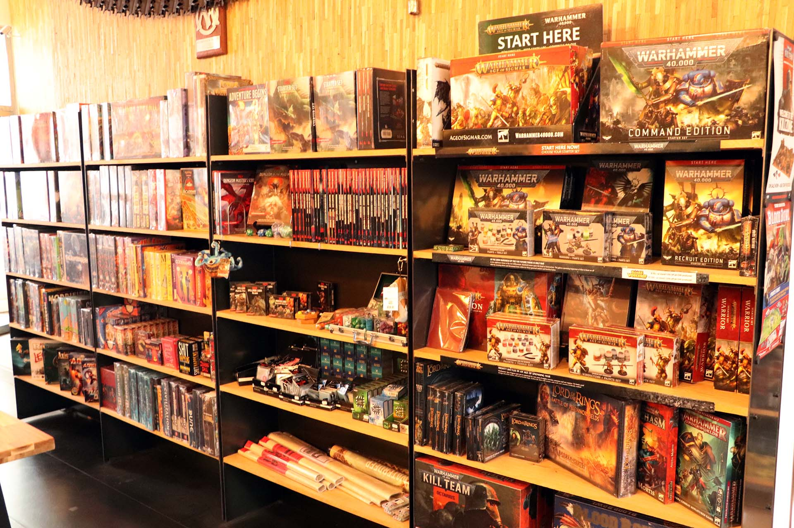
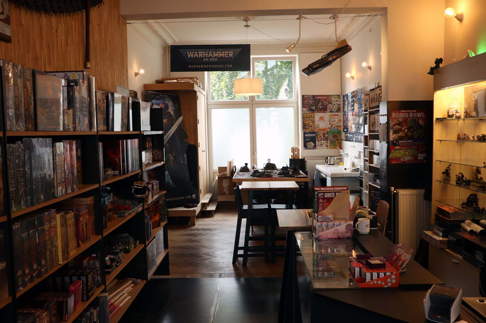
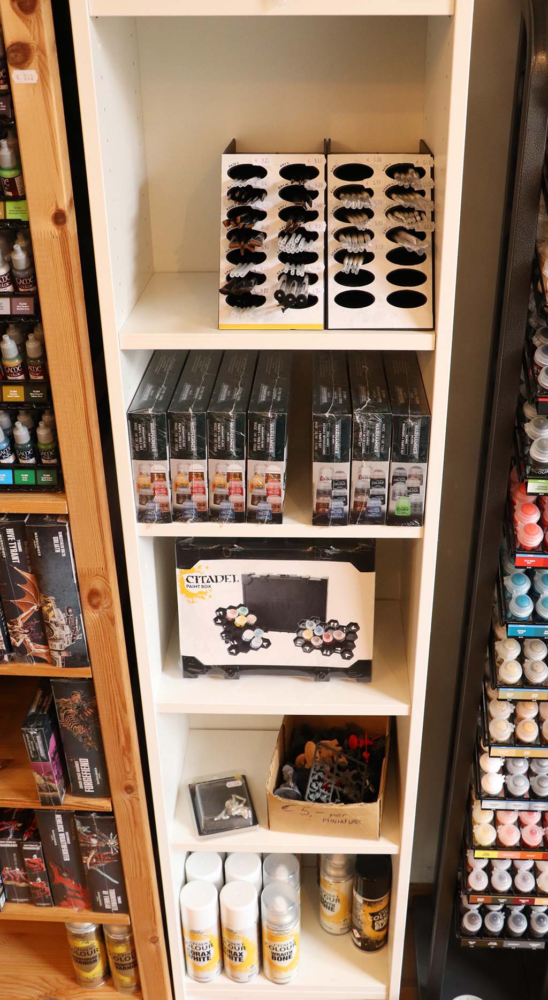
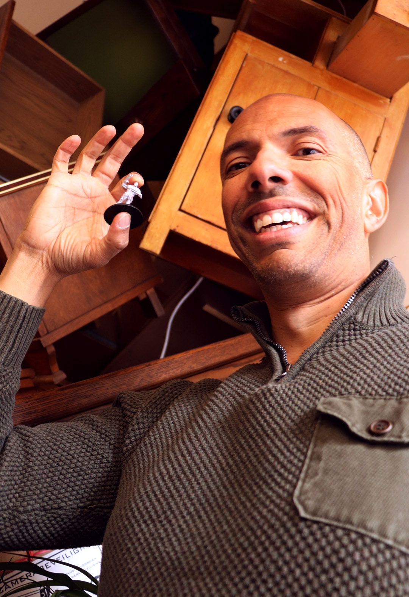
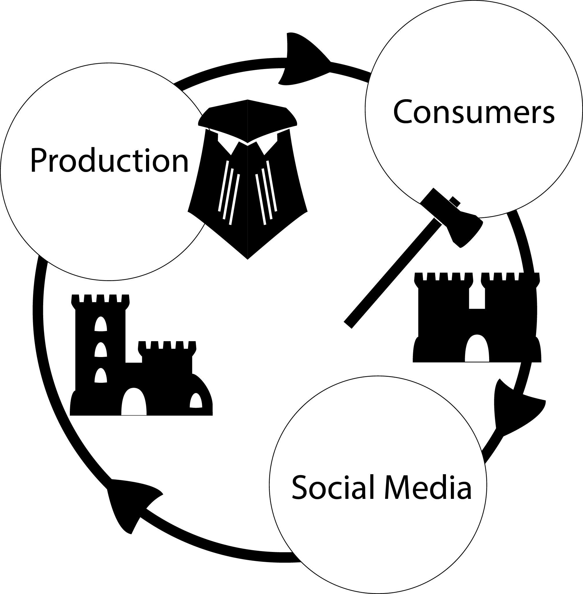

Het staat 35-30 voor jouw tegenstander. Jouw laatste twee krijgers staan
bovenop het objective, als ze hier blijven staan deze ronde verdien jij tien overwinningspunten.
Bij jullie beiden giert de adrenaline door het lichaam.
De dobbelstenen glijden één voor één uit zijn hand en rollen over de tafel. Twee, drie
dobbelstenen rollen hoog genoeg om de krijger te raken. Maar de laatste dobbelsteen tolt door…

Wargaming is niet alleen een hobby, maar ook een winstgevende sector. Maar hoe is een spelletje
uitgegroeid tot een hechte community, die zo loyaal is en zo veel tijd wijdt aan hun hobby? Van
positieve effecten op de mentale gezondheid tot een medium voor sociaal contact: er zijn veel voordelen
aan de tabletop hobby. Maar het is niet alleen zonneschijn en regenbogen, een industrie kan ook gebruik
maken van zo’n community. Daarom de vraag, ben jij een consument, of word jij geconsumeerd door
bedrijven?
Simon van Strijp - 2021



Friendly local store
De meeste hobbyisten treffen elkaar in de friendly local game stores. Wat je ook nodig hebt om te
spelen, kan je hier krijgen.
Geen wonder dat deze winkels door veel bedrijven worden gezien als de perfecte plek om hun community
omheen te bouwen. Er is iets aan de wargaming community dat er voor zorgt dat de consumenten maar terug
blijven komen.
Wargamers verdedigen hun favoriete bedrijven praktisch tot de dood. Waarom gebeurt dit?
Wargamers steken zo veel tijd en moeite in hun hobby, dat het een deel van hun leven wordt. Ze hebben
dus ook een ongekende toewijding aan deze bedrijven.
De Windroos
Een gezellige bordspellen en hobby winkel in hartje Maastricht
Het verven, het is een ambacht of zelfs kunst. Het schilderen van een poppetje kan ergens tussen
30 minuten en 30 uur duren. Veel hobbyisten gebruiken deze tijd om tot rust te komen of een
podcast te luisteren.
Professionele wargamers zoals Uncle Adam (Tabletop Minions) hebben het verven vergeleken met een soort
meditatie. Veel hobbyisten ervaren niet alleen rust maar ook een sense of accomplishment bij het
voltooien van een project.
Sommige spelers vinden de hobby zo leuk dat ze een volgende stap maken.
Meer dan 400%!
Sommige wargamers maken van hun hobby hun beroep. Arjan van Code Orange Games een van die professionals. Ik sprak met hem over
zijn ervaringen bij het ontwerpen van een eigen spel en hoe hij dit gefinancierd heeft met behulp van
kickstarter
We gaan terug 2015. Arjan zit klaar achter zijn laptop. Onder de muiscursor zit de launch knop.
Een succesvolle kickstarter kan een project zien slagen. Het enige waar veel mensen zich in
vergissen is dat een kickstarter niet gebruikt kan worden om jouw community op te bouwen. Nee,
die moet je al klaar hebben staan.
Al het werk is niet alleen in het ontwerpen van een spel gegaan. Maar ook in het verspreiden van
de naam. “We zijn toen naar spei gegaan, Duitsland en we zijn toen gewoon
gaan rondvragen.”

Arjan merkt op dat ze een groot voordeel hadden. Zijn collega Matthijs was al bekend op veel forums door
zijn persoonlijke hobby projecten. Toen hij begon te posten over de onbekende game collision, was
iedereen al snel geïntrigeerd. Uiteindelijk hebben de mannen hun kickstarter met een razend succes
afgesloten: meer dan 400% gefund. “Na vierentwintig uur waren alle unlocks
afgevinkt!” (A. Haakmat, interview, 16 October 2021)
Veel succesvolle kickstarters geven hun backers kilo’s aan plastic figuren, maar is elke wargamer hier
blij mee?
Subcultures
Subcultures is en unieke
spellen winkel aan de gracht in Utrecht waar ik Arjan gesproken heb.
Backlog, pile of shame of to-do list. Het fenomeen kent vele namen. Veel hobbyisten voelen
stress, verplichting of demotivatie door de modellen die niet af zijn. Hoe is het zo gekomen
dat, vooral in deze hobby, zo veel projecten jarenlang blijven liggen?
Eén element wat mee speelt is dat alles van het spel fysiek is. Als een miniatuur uitverkocht
is, dan is dat zo. Ook hebben grote bedrijven teams om de balans tussen winst en behoud van de
community te perfectioneren.
Soms kunnen de business strategieën een impact hebben op de het vertrouwen van jouw community.
Op is op!
The fear of missing out. Het is een marketing techniek die gebruikt wordt door veel bedrijven, zo ook de
spellenindustrie. Om de drie maanden komt er een grote doos uit, gevuld met exclusieve modellen. Maar,
op is op en er zijn maar duizend dozen!
Bij kickstarters komt dit concept vaak terug. De bedrijven bieden extra’s aan die je alleen kunt krijgen
als je het project fund voordat het uitkomt. Dit kan voor problemen zorgen. Je wilt jouw kickstarter
backers iets geven, maar je wilt jouw toekomstige klanten niet een deel van het spel onthouden. Arjan
merkte op dat zij het belangrijk vonden om hier een balans in te vinden.
Wargamers worden beïnvloed voor exclusiviteit of dat nou via een kickstater is of door de nieuwste doos.
Hobbyisten geven geld uit vanuit een angst dat ze het anders nooit meer kunnen krijgen. Sommige aankopen
belanden onderop de backlog en blijven jarenlang in de kast liggen.
Als onderdeel van de hobby maken wargamers vaak zelf terrein of mini’s. Zij kunnen hun creativiteit
laten zien op social media platformen zoals het web magazine
28-mag. Deze creaties zijn vaak
spelelementen waar wel vraag naar is, maar die niet te verkrijgen zijn. De industrie speelt hier
vervolgens op in door de populairste elementen in productie te nemen. Zo zien we dat de industrie
gebruik maakt van de ideeën van de hobbyist. Zorg er voor dat die producten zeldzaam zijn en hokus
pokus, iedereen koopt het product.

In de laatste jaren is er een nieuwe beweging ontstaan. Het opkomen van on demand 3D printing heeft de
kracht teruggegeven aan de wargamers. Daarnaast stellen veel bedrijven zich de vraag, moeten we wel
zoveel plastic produceren, zijn er geen duurzamere oplossingen? Hoe zou dit reflecteren op de reputatie
van het bedrijf?
Het behoud van een community is belangrijk, die mensen stoppen tijd en energie in jouw producten. Maar
de lijn tussen jouw community toepassen en misbruiken is erg dun. Het ligt allemaal in communicatie. Hoe
breng je jouw boodschap en hoe komt het over. Neem de kans om het contact op te zoeken, praat met jouw
community, of je nou een bedrijf bent of een consument.
Die laatste dobbelsteen
Die laaste dobbelsteen… een zes. Oh nee! Het duurt een aantal seconden voordat het echt
doordringt. Verloren, alweer. Zoals gewoonlijk steek je jouw hand uit en schudt die van de
tegenstander waar je net een uur mee hebt gestreden, gelachen en gejuicht.
Je houdt de hand steviger vast dan normaal, en kijkt jouw tegenstander aan en denkt bij
jezelf, de volgende keer lukt het me wel! Tegen die tijd is de andere helft van het leger
ook af, of misschien neem je wel een heel nieuw leger mee?
Nakai, T., Nakatani, H., Hosoda, C., Nonaka, Y., & Okanoya, K. (2017). Sense of Accomplishment Is
Modulated by a Proper Level of Instruction and Represented in the Brain Reward System. PLOS ONE, 12(1),
e0168661.
https://doi.org/10.1371/journal.pone.0168661